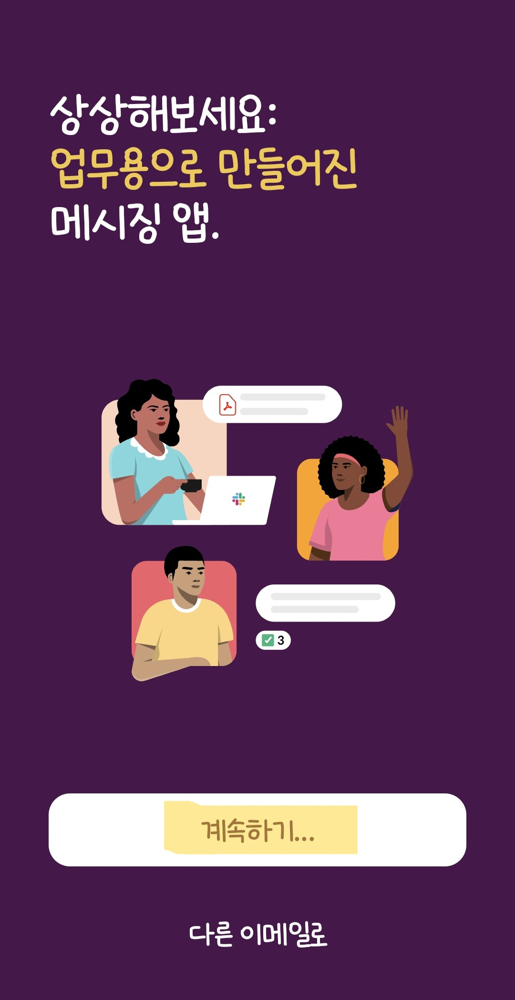
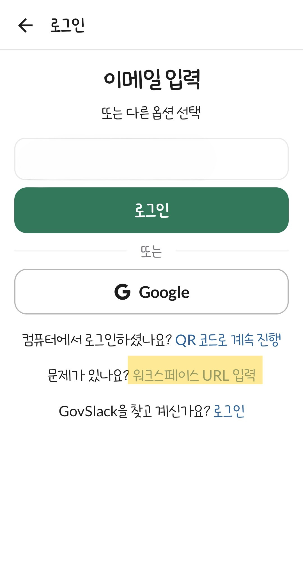
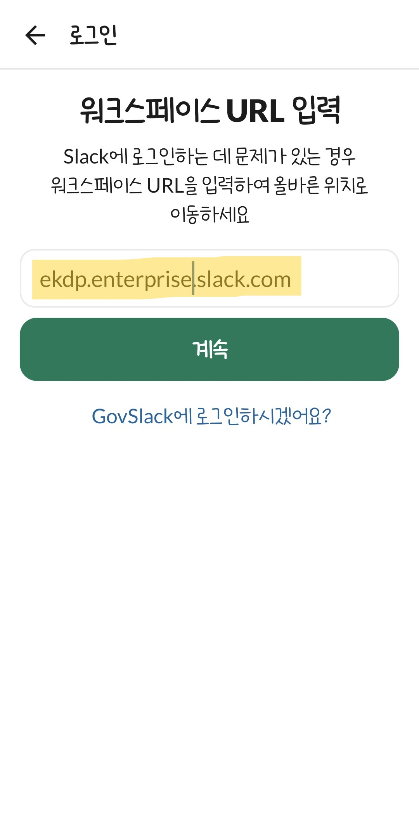
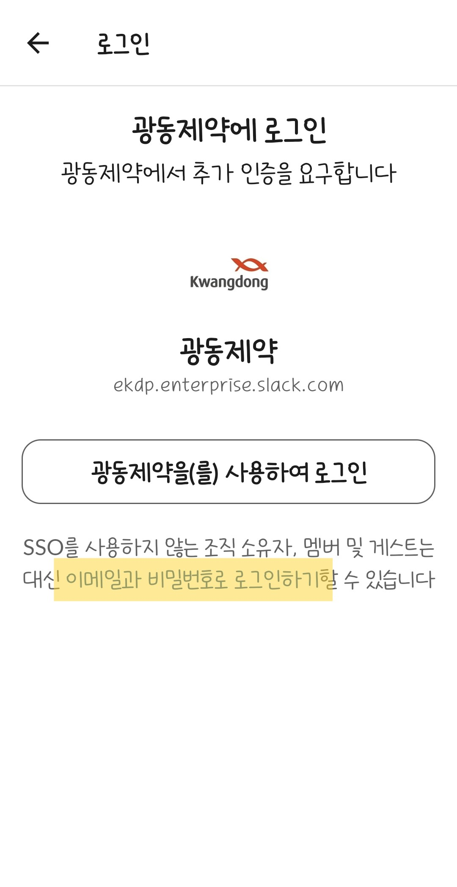
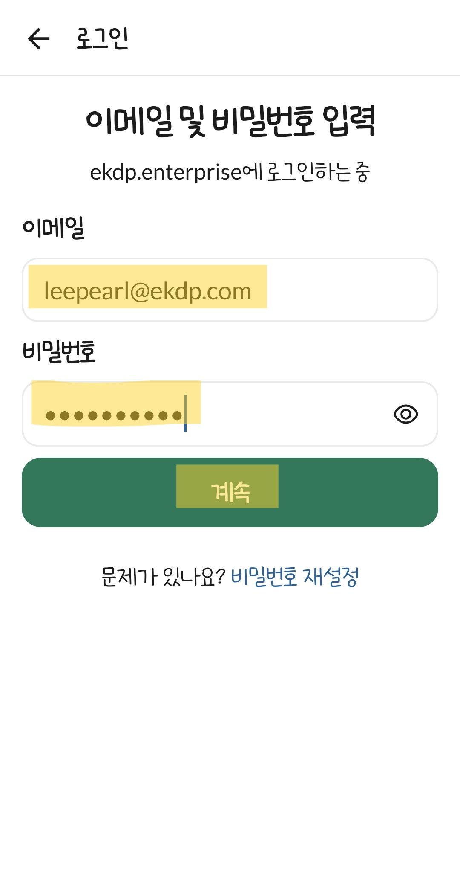
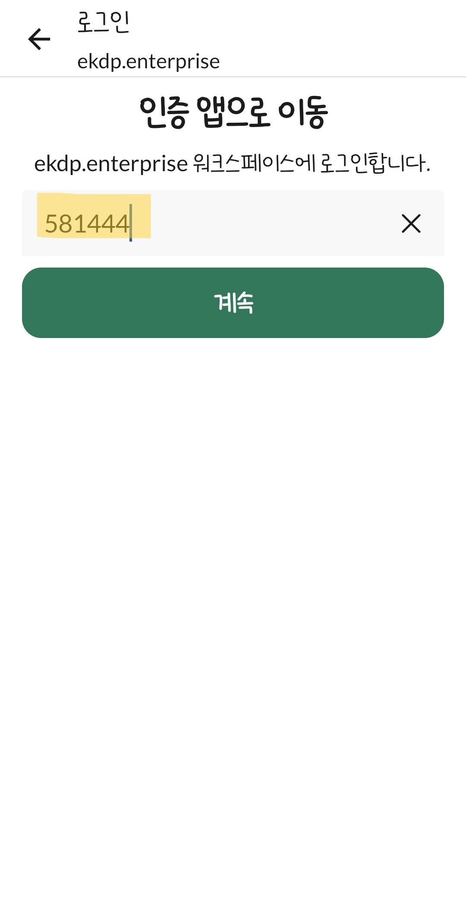

슬랙 앱을 켜면 시작 화면이 딱 뜹니다. 망설이지 말고 [계속하기] 버튼을 톡 눌러주세요 👆
여기까지 오셨으면 로그인의 30%는 이미 끝난 거예요. 아주 잘하고 있어요 😎
앱이 예전 버전이면 버튼 모양이 조금 다를 수 있어요. 그땐 업데이트 후 다시 진행하면 더 매끄럽게 됩니다.
요청하신 순서 기준 · 간편 6단계

슬랙 앱을 켜면 시작 화면이 딱 뜹니다. 망설이지 말고 [계속하기] 버튼을 톡 눌러주세요 👆
여기까지 오셨으면 로그인의 30%는 이미 끝난 거예요. 아주 잘하고 있어요 😎

이메일 입력 화면이 보여도 입력하지 말고, 하단의 [워크스페이스 URL 입력]을 눌러주세요.

워크스페이스 주소를 입력한 뒤 [계속]을 눌러주세요.
ekdp.enterprise.slack.com

로그인 방식 화면에서 [이메일과 비밀번호로 로그인하기]를 선택해주세요.

회사 계정의 이메일과 비밀번호를 입력한 후 [계속]을 눌러주세요.

인증 앱에서 발급된 OTP 6자리를 입력하고 [계속]을 누르면 로그인 완료됩니다.